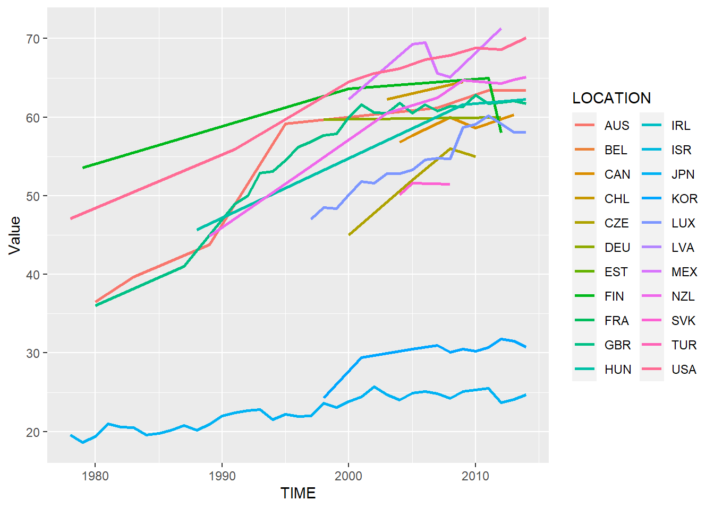
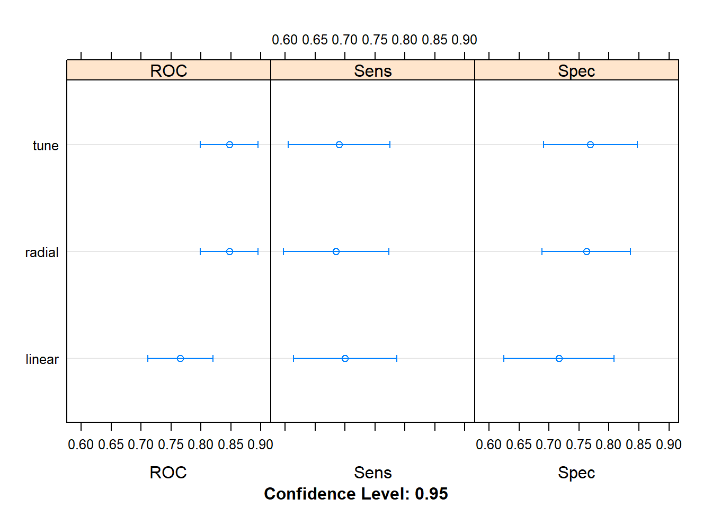

4.14 Visual Data Mining
2020-05-26
all code from the professor
Download Overweight or obese population from OECD Data
Loading data
library("tidyverse")
oecd.obse <- read.csv("2.UploadedData/oecd_obese.csv", encoding="UTF-8", header= TRUE, sep=",")
names(oecd.obse)[1]<-"LOCATION" # change first column nameSee the data
| LOCATION | INDICATOR | SUBJECT | MEASURE | FREQUENCY | TIME | Value | Flag.Codes |
|---|---|---|---|---|---|---|---|
| AUS | OVEROBESE | MEASURED | PC_POP15 | A | 1980 | 36.5 | D |
| AUS | OVEROBESE | MEASURED | PC_POP15 | A | 1983 | 39.7 | D |
| AUS | OVEROBESE | MEASURED | PC_POP15 | A | 1989 | 43.8 | D |
| AUS | OVEROBESE | MEASURED | PC_POP15 | A | 1995 | 59.2 | |
| AUS | OVEROBESE | MEASURED | PC_POP15 | A | 2007 | 61.2 | D |
| AUS | OVEROBESE | MEASURED | PC_POP15 | A | 2011 | 63.4 | D |
| AUS | OVEROBESE | MEASURED | PC_POP15 | A | 2014 | 63.4 | D |
| CAN | OVEROBESE | MEASURED | PC_POP15 | A | 2004 | 56.8 | |
| CAN | OVEROBESE | MEASURED | PC_POP15 | A | 2005 | 57.7 | |
| CAN | OVEROBESE | MEASURED | PC_POP15 | A | 2008 | 60.0 | |
| CAN | OVEROBESE | MEASURED | PC_POP15 | A | 2010 | 58.6 | |
| CAN | OVEROBESE | MEASURED | PC_POP15 | A | 2013 | 60.3 | |
| FIN | OVEROBESE | MEASURED | PC_POP15 | A | 1979 | 53.6 | |
| FIN | OVEROBESE | MEASURED | PC_POP15 | A | 2000 | 63.6 | |
| FIN | OVEROBESE | MEASURED | PC_POP15 | A | 2011 | 65.0 |
Explore the dataset
| LOCATION | INDICATOR | SUBJECT | MEASURE | FREQUENCY | TIME | Value | Flag.Codes | |
|---|---|---|---|---|---|---|---|---|
| JPN :37 | OVEROBESE:153 | MEASURED:153 | PC_POP15:153 | A:153 | Min. :1978 | Min. :18.60 | :143 | |
| GBR :26 | NA | NA | NA | NA | 1st Qu.:1997 | 1st Qu.:29.40 | B: 1 | |
| LUX :18 | NA | NA | NA | NA | Median :2005 | Median :53.30 | D: 7 | |
| KOR :11 | NA | NA | NA | NA | Mean :2002 | Mean :47.15 | E: 2 | |
| USA :10 | NA | NA | NA | NA | 3rd Qu.:2010 | 3rd Qu.:61.20 | NA | |
| NZL : 8 | NA | NA | NA | NA | Max. :2014 | Max. :71.30 | NA | |
| (Other):43 | NA | NA | NA | NA | NA | NA | NA |
4.14.1 ggplot2
Real world data
library(ggplot2)
library(ggforce)
s <- ggplot(data=oecd.obse)
s <- s + aes(x=TIME, y=Value )
s <- s + aes(color=LOCATION)
#s <- s + geom_smooth(method="lm")
s <- s + geom_line(size=1)
s
Clean it up, just keeping “measured” records
Plot value over time by Location
s <- ggplot(data=oecd.obse.measure)
s <- s + aes(x=TIME, y=Value )
s <- s + aes(color=LOCATION)
s <- s + geom_line(size=1)
s
Zoom Mexico
4.14.2 vdmR
again filter data and see value
library(vdmR)
measured.obse <- oecd.obse[which(oecd.obse$SUBJECT=='MEASURED'), ]
quantile(measured.obse$Value)## 0% 25% 50% 75% 100%
## 18.6 29.4 53.3 61.2 71.3now we can use vdmR library to see the data in a browser.
create a histogram:
vhist(Value, measured.obse, "hist01", "measured.obse", color = LOCATION)
and launch it with data table:
vlaunch(measured.obse, "main", "measured.obse", browse=TRUE)
Japan, Korea are below 1st quartiles, whereas USA, New Zealand, Austria, UK and Hungary are above 3rd quartile.
Read new data annd merge it with initial data
pyll <- read.csv("2.UploadedData/PYLL.csv", encoding="UTF-8", header= TRUE, sep=",")
names(pyll)[1]<-"LOCATION"
deaths_cancer <- read.csv("2.UploadedData/Deaths_Cancer.csv", encoding="UTF-8", header= TRUE, sep=",")
names(deaths_cancer)[1]<-"LOCATION"
merged <- merge(oecd.obse,pyll, by.x=c('LOCATION','TIME'), by.y=c('LOCATION','TIME'))dropping some columns and rename them
merged <- merged[,-c(8:12)]
merged <- merged[,-9]
merged <- merged[,-c(3:6)]
colnames(merged) <- c("LOCATION", "TIME", "OBESITY", "PYLL")create a scatter plot:
vscat(OBESITY, PYLL, merged, "scat01", "measured.obse")
and launch it with data
vlaunch(merged, "main", "measured.obse", browse=TRUE)
merge new data and dropp some columns and rename them:
merged<- merge(merged,deaths_cancer, by.x=c('LOCATION','TIME'), by.y=c('LOCATION','TIME'))
merged <- merged[,-c(5:8)]
merged <- merged[,-6]
colnames(merged) <- c("LOCATION", "TIME", "OBESITY", "PYLL", "DEATHS_CANCER")create a new scatter plot:
vscat(OBESITY, DEATHS_CANCER, merged, "scat02", "measured.obse")
and launch it with data
vlaunch(merged, "main", "measured.obse", browse=TRUE)